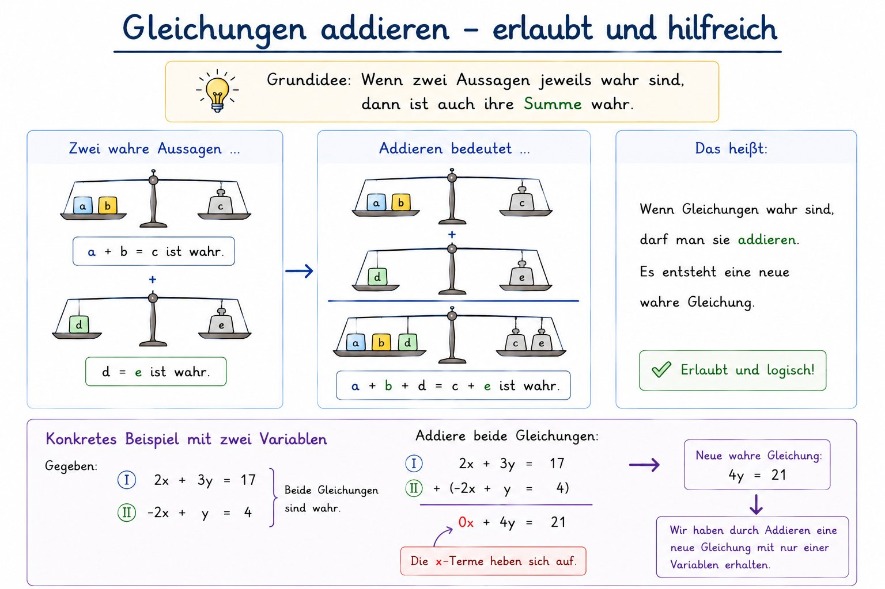

y = 3x + 2 (Gl. I)
2x + (3x + 2) = 11
5x + 2 = 11 → 5x = 9 → x = 1,8
y = 3 · 1,8 + 2 = 7,4
2x + (3x + 2) = 11. Jetzt hast du nur noch eine Unbekannte!
2x + 3x + 2 = 11 → 5x = 9 → x = 1,8y = 3 · 1,8 + 2 = 7,4y = 2x + 1 in Gl. II ein: x + (2x + 1) = 7 → löse nach x auf.3x + 1 = 7 → x = 2 → y = 5y = 9 − 2xy = 9 − 2x in Gl. I ein: 3x + 2·(9 − 2x) = 16 → Achtung: Klammern ausmultiplizieren! → löse nach x auf.3x + 18 − 4x = 16 → −x = −2 → x = 2 → y = 5
(3x + 2y) + (x − 2y) = 12 + 44x = 16 → x = 4
3·4 + 2y = 12 → 12 + 2y = 12 → y = 0
I+II: 2x = 8 → x = 44 + y = 6 → y = 2(x + y) + (x − y) = 6 + 2 → 2x = 8x = 4 → in Gl. I: 4 + y = 6 → y = 2−6x − 2y = −18. Jetzt addieren I + II·(−2): x + 2y + (−6x − 2y) = 8 + (−18) → −5x = −10 → x = 2x = 2 → in Gl. I: 2 + 2y = 8 → y = 3Du hast dein Verfahren erarbeitet und geübt – jetzt erklärst du es deinem Partner. Dann erklärt dein Partner sein Verfahren. Nutzt das Lösungsbeispiel von eurer Karte als Grundlage.
2x + (x+3) = 9 → 3x = 6 → x = 2y = 2+3 = 54x = 10 → x = 2,52·2,5 + y = 7 → y = 2Löst das folgende LGS beide – A mit dem Einsetzungsverfahren, B mit dem Additionsverfahren. Vergleicht danach eure Lösungswege.
y = 3 − x → in I: 3x − (3−x) = 5 → 4x = 8 → x = 2 → y = 14x = 8 → x = 2 → y = 1